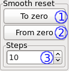

Smooth reset¶
The smooth reset panel provides a convenient way to reset all resources tied to enabled and constant variables. Each step is always 100 ms.

- Sweep from constant values to zero.
- Sweep from zero to constant values.
- The number of steps to use.
Warning
For both directions, the smooth reset panel makes the assumption that the from value is the current value of the resource. For example, if the voltage source port behind the resource is sitting at 5 V, and the constant value of the variable is 5 V, pressing the “To zero” button is safe. If this is not the case, a jump will occur at the beginning of the reset.